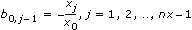
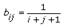
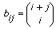

| 0 | Identity—Generates an n-by-n identity matrix. |
| 1 | Diagonal—Generates an nx-by-nx diagonal matrix whose diagonal elements are the elements of X. |
| 2 | Toeplitz—Generates an nx-by-ny Toeplitz matrix, which has X as its first column and Y as its first row. If the first element of X and Y are different, the first element of X is used. |
| 3 | Vandermonde—Generates an nx-by-nx Vandermonde matrix whose columns are powers of the elements of X. The elements of a Vandermonde matrix are:
bi,j = xinx – j – 1
|
| 4 | Companion—Generates an nx-1-by-nx-1 companion matrix. If vector X is a vector of a polynomial coefficient, the first element of X is the coefficient of the highest order, the last element of X is the constant term in the polynomial, the corresponding companion matrix is constructed as follows: the first row is
| the rest of B from the second row is an identity matrix. |
| The eigenvalues of a companion matrix contain the roots of the corresponding polynomial. |
|
| 5 | Hankel—Generates an nx-by-ny Hankel matrix, where X is the first column and Y is the last row of the matrix. If the first element of Y and last element of X are different, this VI uses the last element of X. |
| 6 | Hadamard—Generates an n-by-n Hadamard matrix, whose elements are 1 and –1. All columns or rows are orthogonal to each other. matrix size must be a power of 2, a power of 2 multiplied by 12, or a power of 2 multiplied by 20. If n is 1, this VI returns an empty matrix. |
| 7 | Wilkinson—Generates an n-by-n Wilkinson matrix whose eigenvalues are ill-conditioned. |
| 8 | Hilbert—Generates an n-by-n Hilbert matrix, which has elements according to the following equation.

|
| 9 | Inverse Hilbert—Generates the inverse of an n-by-n Hilbert matrix. |
| 10 | Rosser—Generates an 8-by-8 Rosser matrix whose eigenvalues are ill-conditioned. |
| 11 | Pascal—Generates an n-by-n symmetric Pascal matrix, which has elements according to the following equation.

|
 Add to the block diagram
Add to the block diagram Find on the palette
Find on the palette